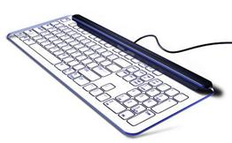

Выбираем компьютерную клавиатуру.

Как правило, когда покупают компьютер в Минске
на главной странице, многие люди даже не задумываются о приобретении качественной клавиатуры. Однако следует помнить, что клавиатура
является одной из важных частей всего компьютера. При покупке компьютера, зачатую приобретается наиболее дешевая клавиатура с ограниченным количеством
функций. Обычно она подходит к компьютеру только по цвету, что, впрочем, и устраивает многих покупателей. Однако рекомендуется обращать внимания и на другие
функции клавиатуры.
К примеру, при выборе клавиатуры следует обратить внимание на то, как нажимаются ее клавиши. Они должны нажиматься достаточно мягко и не требовать
дополнительных усилий. Также на любой клавиатуре необходимо наличие подставки для рук. Многие современные клавиатуры выпускаются без этой подставки,
возможно, для экономии. Но следует помнить, что при работе на клавиатуре, при отсутствии специальной подставки, руки довольно быстро устают. Обратите
внимание и на раскладку клавиатуры. Самой удобной будет основная раскладка, на ней имеется отдельный блок для цифровой клавиатуры. На буквах «А» и «О»
обязательно должны быть так называемые «пупырышки». Они понадобятся при «слепом» наборе. Приобретать клавиатуру небольших размеров стоит только в том случае,
когда для большой просто нет места. Обратите внимание и на дополнительные клавиши. Для вас они могут быть как совершенно бесполезными, так и очень необходимыми.
Поэтому следует определиться, какие из дополнительных клавиш должны присутствовать на вашей клавиатуре.
Не стоит приобретать первую попавшуюся клавиатуру. Ведь они бывают совершенно разными: предназначенные специально для геймеров, или же идеально будут подходить
для написания текстов. Широкое распространение получили клавиатуры, предназначенные специально для конкретных игр. Совершая такую покупку, каждый человек должен
помнить, что правильно подобранная клавиатура способна существенно облегчить, и даже ускорить работу на компьютере.
Следующая статья:
Состовляющие ПК. Корпус.